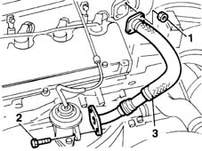

1080C54 pipe carrying exhaust gas from e.g.r. valve to inlet manifold - r + r
- Path
- Procedures > 10 ENGINE UNIT > 1080 EXHAUST EMISSION CONTROL SYSTEM > 1080C exhaust gas recirculation system (e.g.r.) > 1080C54 pipe carrying exhaust gas from e.g.r. valve to inlet manifold - r + r
- Kind
- repair procedure (removal / refitting; the operation number is the code)
- Applies to
- engines: 1.9 JTD 8V; all production periods
- Interactive page
- https://sloeber94.github.io/elrnDB-fMltpl/en/#/2891432
Applies to: engines: 1.9 JTD 8V; all production periods
 Removing
Removing
 Refitting
Refitting1016A10 sound-proofing cover - r + r
1. Undo nuts (1a) and disconnect pipe carrying exhaust gas from the EGR valve to the intake manifold (1b), intake manifold side.
2. Undo the bolts.
3. Remove the pipe carrying exhaust gas from the EGR valve to the intake manifold.

Applies to: engines: 1.9 JTD 8V; all production periods
Refitting
RemovingCheck the condition of the hose
Fit the rigid pipe with a new gasket.
Tighten the bolts securing the pipe to the EGR valve.
 | Fastening | Component | Ø | Value (daNm) |
|---|---|---|---|---|
- | Bolt | EGR VALVE | M8 | 2.5 |
Tighten the nuts securing the pipe to the intake manifold.